אלגוריתמים אקראיים — Monte-Carlo, Las-Vegas, Quicksort ו-Karger
⏱ זמן משוער: 60 דק'
0. המוטיבציה: "שוויוניות בין קלטים"
עד כה כל האלגוריתמים שראינו היו דטרמיניסטיים: על אותו קלט הם מבצעים בדיוק אותם צעדים ורצים תמיד אותו זמן. אלגוריתם דטרמיניסטי כזה יכול לסבול מ"קלט גרוע" — מערך שכבר ממוין, למשל, שמאלץ את QuickSort הרגיל לרוץ בזמן Θ(n²). הרעיון של אלגוריתם אקראי (randomized algorithm) הוא לזרוק לתוך הריצה בחירות אקראיות (הטלות מטבע), כך שההתנהגות תלויה במזל ולא בקלט.
המרצה מנסחת זאת בענני מחשבה בשקף הפתיחה: "Equalitarianism between inputs!" (שוויוניות בין קלטים). ברגע שהאלגוריתם מגריל את החלטותיו, אין יותר קלט "טוב" או קלט "רע" — הסיסמה המרכזית של האשכול היא:
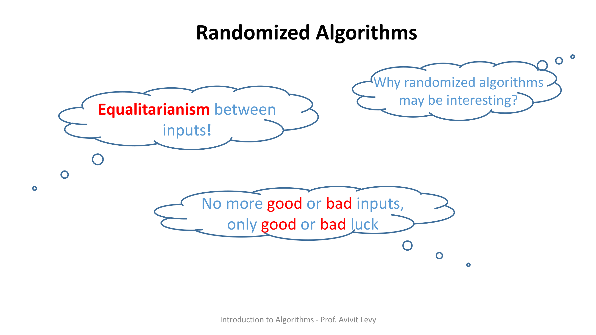
מקור: randomized-algorithms.pdf (עמ' 1)
1. שני סוגי אלגוריתמים אקראיים: Las Vegas מול Monte Carlo
המרצה כותבת בהגדרה: "There are two kinds of randomized algorithms" — יש שני סוגים של אלגוריתמים אקראיים, ולהבחין ביניהם זו נקודת מבחן קלאסית. ההבדל הוא על מה הם מהמרים: על הנכונות, או על זמן הריצה.
| סוג | נכונות התשובה | זמן הריצה |
|---|---|---|
| Las Vegas | תמיד נכונה — מחזיר תשובה נכונה בהסתברות 1. | משתנה מקרי; חוסמים את תוחלת מספר הצעדים (expected). |
| Monte Carlo | עלולה להיות שגויה — נכונה בהסתברות קטנה מ-1; חוסמים את הסתברות השגיאה (error probability). | חסום במקרה הגרוע (worst case). |
דוגמאות מהקורס: Randomized QuickSort (בחירת ה-pivot אקראית) הוא אלגוריתם Las Vegas — התוצאה תמיד ממוינת, רק זמן הריצה אקראי. לעומתו אלגוריתם Freivalds לאימות כפל מטריצות (C = A·B) הוא אלגוריתם Monte Carlo — הוא מהיר, אך עלול לטעות בהסתברות קטנה. (Freivalds מוזכר בתרגיל הבית ונלמד בכיתה, אך אינו מופיע בקובץ שקפים זה.)
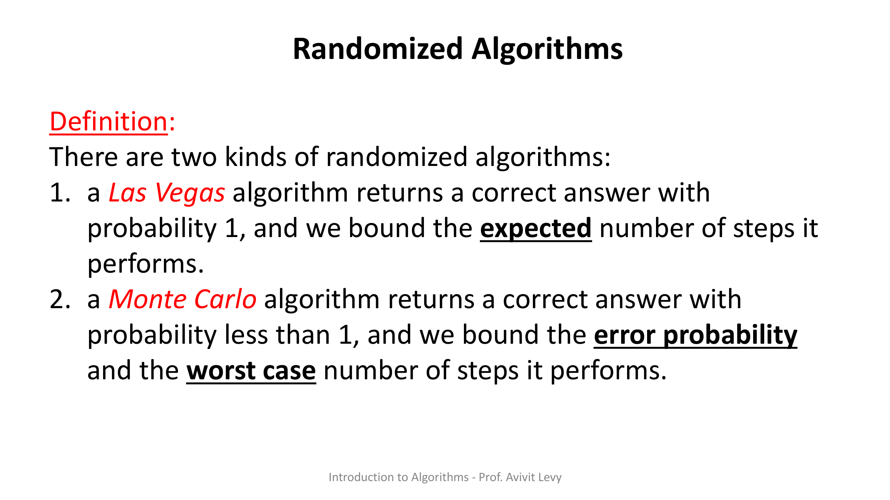
מקור: randomized-algorithms.pdf (עמ' 2–3)
2. תזכורת הסתברות: מרחב, מאורע, משתנה מקרי ותוחלת
לפני שנוכל לנתח את Randomized QuickSort, המרצה מסדרת את כלי ההסתברות הבסיסיים. אלה ההגדרות המדויקות מהשקף:
- Ω הוא מרחב (קבוצה) — מרחב המדגם, קבוצת כל התוצאות האפשריות.
- A ⊆ Ω הוא מאורע (event) — תת-קבוצה של מרחב המדגם.
- P: Ω ↦ [0,1] היא פונקציית הסתברות אם ∑ω∈Ω P(ω) = 1.
- מרחב הסתברות (probability space) הוא הזוג (Ω, P).
- משתנה מקרי (random variable) הוא פונקציה X: Ω ↦ ℝ. אפשר להגדיר סכום של משתנים מקריים לפי (X + Y)(ω) = X(ω) + Y(ω).
עבור משתנה מקרי בדיד X, התוחלת (expectation) מוגדרת כממוצע המשוקלל:
E[X] = ∑_{ω∈Ω} X(ω) · P(ω)
התכונה שתעשה את כל העבודה בניתוח שלנו היא שהתוחלת היא אופרטור לינארי:
E[X + Y] = E[X] + E[Y] (linearity of expectation) E[c · X] = c · E[X]
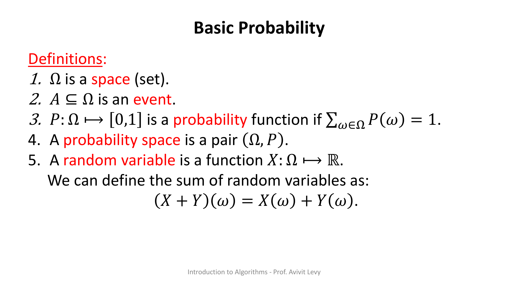
מקור: randomized-algorithms.pdf (עמ' 4–6)
3. הסכימה של Randomized QuickSort
זהו QuickSort הרגיל — עם שינוי אחד: איבר ה-pivot נבחר אקראית ובאופן אחיד מתוך הקבוצה, במקום להיות תמיד האיבר הראשון/האחרון. להלן הפסאודו-קוד המדויק מהשקף:
Randomized QuickSort Scheme:
Input: a set S of size n.
Output: S ordered from minimal to maximal element.
1) Choose at random an element y ∈ S as a pivot.
2) By comparison find the following sets:
S₁ = { x ∈ S | x < y },
S₂ = { x ∈ S | x > y }
3) Recursively sort S₁ and S₂
4) Return ⟨ sorted S₁ , y , sorted S₂ ⟩
הסבר שורה-אחר-שורה:
- (1) בוחרים איבר y ∈ S באופן אקראי אחיד (uniformly) בתור pivot. זו ההגרלה היחידה בכל קריאה רקורסיבית.
- (2) במעבר אחד של השוואות בונים שתי קבוצות: S₁ = כל האיברים הקטנים מ-y, ו-S₂ = כל האיברים הגדולים מ-y. כל איבר מושווה ל-pivot פעם אחת — כאן "נספרות" ההשוואות.
- (3) ממיינים רקורסיבית את S₁ ואת S₂ באותה שיטה.
- (4) מחזירים את השרשור: S₁ ממוין, ואז ה-pivot y, ואז S₂ ממוין — וזהו מערך ממוין שלם.
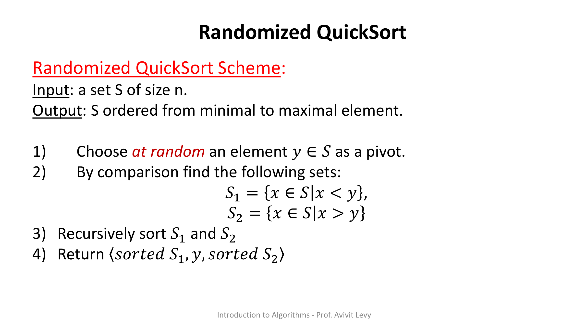
מהי בעצם המורכבות? המרצה מדגישה בענן כחול ממוסגר: The Complexity = Number of Comparisons — המורכבות שווה למספר ההשוואות, וזהו משתנה מקרי X (כי הוא תלוי בהגרלות). לכן כל הניתוח שלנו יתמקד בחישוב E[X] — תוחלת מספר ההשוואות.
מקור: randomized-algorithms.pdf (עמ' 7–9, 19–20)
4. דוגמת ריצה מלאה — S = {7,5,2,8,9,1,4,6}
זו הדוגמה החוזרת לאורך כל האשכול. הקלט הוא S = {7, 5, 2, 8, 9, 1, 4, 6} עם n = 8. אינדקסי המיקום (Pos) הם 0..7 מתחת לאיברים 7,5,2,8,9,1,4,6 בהתאמה. בכל קריאה, ה-Random bits מפורשים כמיקום (החל מ-0) שממנו נבחר ה-pivot:
- Random bits: 100 → מיקום 4 → y = 9. חלוקה: S₁ = {7,5,2,8,1,4,6}, S₂ = {} (אין איבר גדול מ-9).
- רקורסיה על S₁ = {7,5,2,8,1,4,6} (Pos 0..6): Random bits: 010 → מיקום 2 → y = 2. חלוקה: S₁ = {1}, S₂ = {7,5,8,4,6}.
- רקורסיה על S₂ = {7,5,8,4,6} (Pos 0..4): Random bits: 001 → מיקום 1 → y = 5. חלוקה: S₁ = {4}, S₂ = {7,8,6}.
- רקורסיה על S₂ = {7,8,6} (Pos 0..2): Random bits: 00 → מיקום 0 → y = 7. חלוקה: S₁ = {6}, S₂ = {8}.
ההרכבה חזרה (מסומנת בירוק על השקפים, נבנית מלמטה למעלה):
- {7,8,6} ממוין → {6,7,8}
- {7,5,8,4,6} ממוין → {4,5,6,7,8}
- {7,5,2,8,1,4,6} ממוין → {1,2,4,5,6,7,8}
- התוצאה הסופית: S = {1, 2, 4, 5, 6, 7, 8, 9}
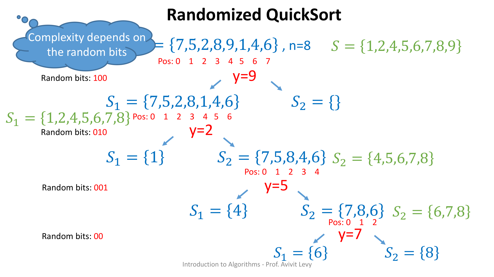
מקור: randomized-algorithms.pdf (עמ' 10–20)
5. הכנה לניתוח: הסימונים Si ו-Xi,j
המטרה, בלשון המרצה: "We will compute the expected number of comparisons that the algorithm performs for any input" — נחשב את תוחלת מספר ההשוואות עבור כל קלט. לשם כך צריך שני סימונים.
Si: לכל 1 ≤ i ≤ n, זהו האיבר של S שנמצא במקום ה-i ברשימה הממוינת. בדוגמה שלנו, אחרי המיון S = {1,2,4,5,6,7,8,9}, ולכן:
S¹ = 1, S² = 2, S³ = 4, S⁴ = 5, S⁵ = 6, S⁶ = 7, S⁷ = 8, S⁸ = 9
Xi,j: לכל 1 ≤ i, j ≤ n מגדירים משתנה מציין (indicator variable):
X_{i,j} = 1 if S^i is compared to S^j during the run
X_{i,j} = 0 otherwise
כלומר Xi,j "מדליק נורה" בדיוק כאשר שני האיברים שמיקומם הממוין הוא i ו-j הושוו זה לזה במהלך הריצה. מספר ההשוואות הכולל X הוא בסך הכל ∑i ∑j>i Xi,j — כי כל זוג איברים מושווה לכל היותר פעם אחת.
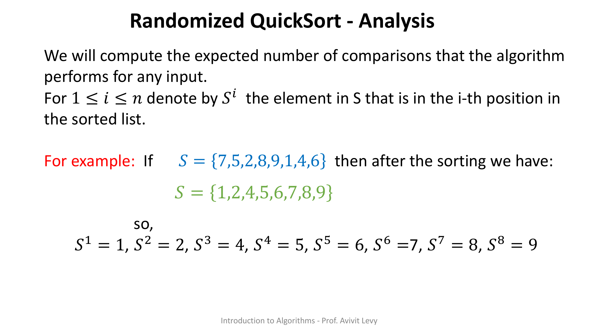
תוך כדי ריצת האלגוריתם על הדוגמה, המרצה ממלאת בהדרגה טבלה משולשת של ערכי Xi,j (כאשר i הוא המיקום הממוין של האיבר הקטן, j של הגדול):
X_1,2 = 1 X_1,3 = 0 X_2,3 = 1 X_1,4 = 0 X_2,4 = 1 X_3,4 = 1 X_1,5 = 0 X_2,5 = 1 X_3,5 = 0 X_4,5 = 1 X_1,6 = 0 X_2,6 = 1 X_3,6 = 0 X_4,6 = 1 X_5,6 = 1 X_1,7 = 0 X_2,7 = 1 X_3,7 = 0 X_4,7 = 1 X_5,7 = 0 X_6,7 = 1 X_1,8 = 1 X_2,8 = 1 X_3,8 = 1 X_4,8 = 1 X_5,8 = 1 X_6,8 = 1 X_7,8 = 1
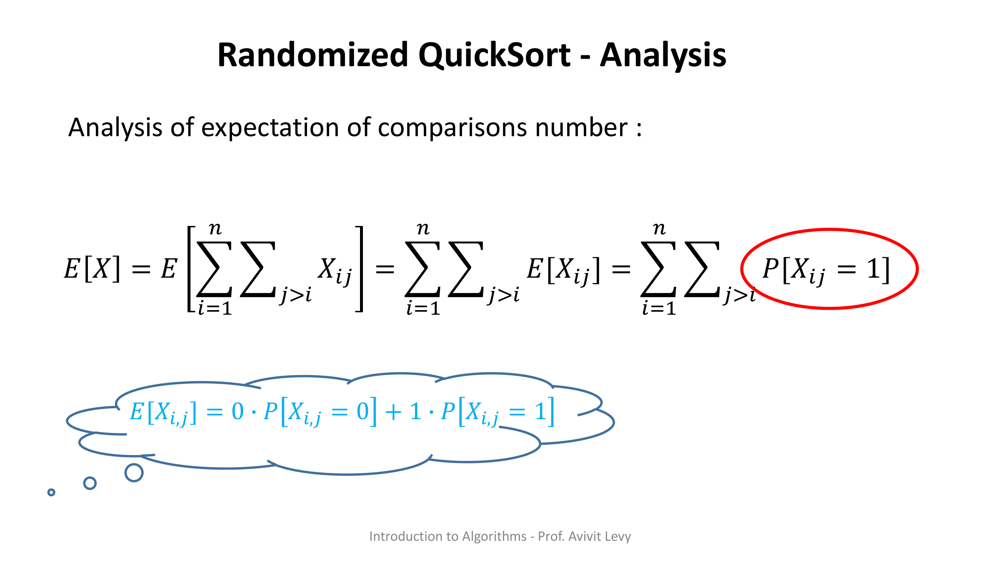
מקור: randomized-algorithms.pdf (עמ' 21–30)
6. שתי הטענות: מתי זוג מושווה, ומה ההסתברות לכך
Claim 1 — מתי Xi,j = 1?
נתבונן ב"פעם הראשונה שנבחר pivot y = Sk כך ש-i ≤ k ≤ j". הטענה:
הוכחה (⇐ ההנחה Xi,j=1):
נניח Xi,j=1, כלומר Si הושווה עם Sj. עד שנבחר pivot y = Sk עם i ≤ k ≤ j, שני האיברים שייכים לאותה קבוצה (ל-S₁ או ל-S₂) ומושווים רק ל-pivots, לא זה לזה. אם היה מתקיים i < k < j, אז בשלב הזה Si היה נופל ל-S₁ ו-Sj ל-S₂, ומעתה הם לעולם לא יושוו (איברים מושווים רק ל-pivots שנבחרים מהקבוצה שלהם). לכן חייב להתקיים k ∈ {i, j}.
הוכחה (⇒ ההנחה k ∈ {i,j}):
נניח k ∈ {i,j}. שוב, עד שנבחר y = Sk עם i ≤ k ≤ j, שניהם באותה קבוצה ומושווים רק ל-pivots. כעת אם y = Si (או y = Sj) הוא ה-pivot, האחר הוא איבר באותה קבוצה ולכן חייב להיות מושווה ל-pivot הזה. לכן Xi,j = 1.
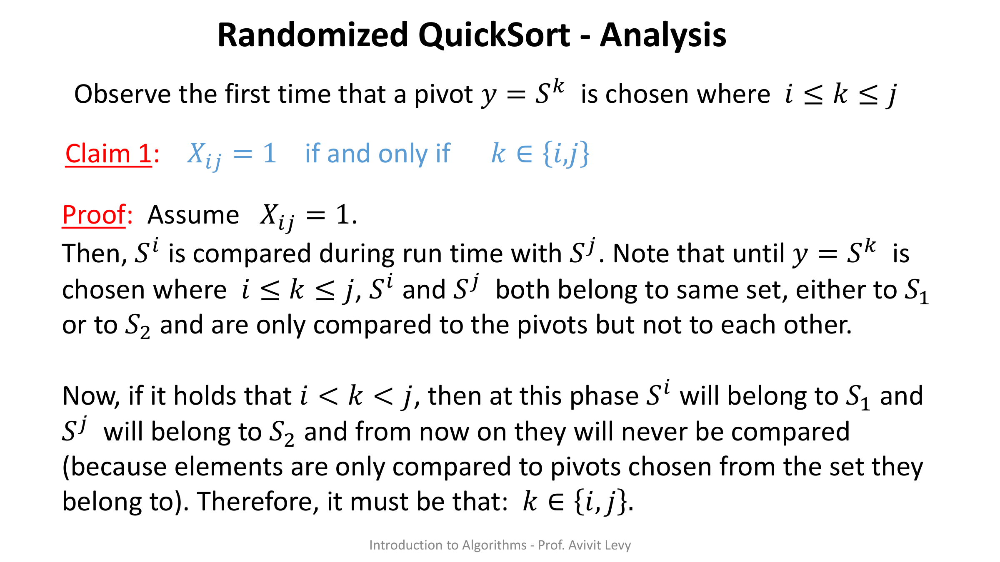
Claim 2 — ההסתברות pi,j
הוכחה: יש בדיוק j − i + 1 ערכים אפשריים של k בטווח i ≤ k ≤ j שיכולים להשפיע (בכל שאר המקרים שני האיברים עדיין באותה קבוצה ולא מכריעים דבר). לפי Claim 1, בפעם הראשונה שנבחר pivot מהטווח הזה, כל אחד מ-j−i+1 המועמדים שקול להיבחר (ה-pivot אקראי אחיד), אבל רק שתי בחירות — k = i או k = j — גורמות ל-Xi,j = 1. לכן ההסתברות היא 2 מתוך (j − i + 1), כלומר 2/(j − i + 1).
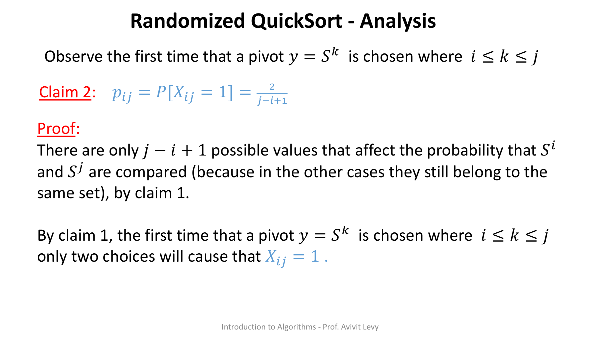
מקור: randomized-algorithms.pdf (עמ' 31–33)
7. חישוב התוחלת: E[X] = O(n log n)
עכשיו מרכיבים הכול. מפרקים את מספר ההשוואות הכולל לסכום של המשתנים המציינים, מפעילים לינאריות התוחלת, מציבים את E[Xi,j] = P[Xi,j=1] = pi,j (כי זהו משתנה מציין), ולבסוף את Claim 2:
E[X] = E[ Σ_{i=1}^{n} Σ_{j>i} X_ij ]
= Σ_{i=1}^{n} Σ_{j>i} E[X_ij] (linearity of expectation)
= Σ_{i=1}^{n} Σ_{j>i} P[X_ij = 1] (E[X_ij] = 0·P[X_ij=0] + 1·P[X_ij=1])
= Σ_{i=1}^{n} Σ_{j>i} p_ij
= Σ_{i=1}^{n} Σ_{j>i} 2/(j−i+1) (by Claim 2)
= Σ_{i=1}^{n} Σ_{k=1}^{n−i} 2/(k+1) (change of variable k = j−i)
≤ 2 Σ_{i=1}^{n} Σ_{k=1}^{n} 1/(k+1)
≤ 2 Σ_{i=1}^{n} Σ_{k=1}^{n} 1/k
= 2 Σ_{i=1}^{n} ln(n)
= O(n log n)
הסבר המעברים:
- שורה 2: לינאריות התוחלת מפרקת את תוחלת הסכום לסכום התוחלות — ללא צורך באי-תלות בין ה-Xi,j.
- שורה 3: עבור משתנה מציין, E[Xi,j] = 0·P[Xi,j=0] + 1·P[Xi,j=1] = P[Xi,j=1].
- שורה 5: הצבת Claim 2, pi,j = 2/(j−i+1).
- שורה 6: החלפת משתנה k = j−i (כשהמרחק בין המיקומים רץ מ-1 עד n−i).
- שורות 7–9: חוסמים מלמעלה בטור ההרמוני ∑k=1n 1/k ≈ ln(n), ומקבלים 2·n·ln(n) = O(n log n).
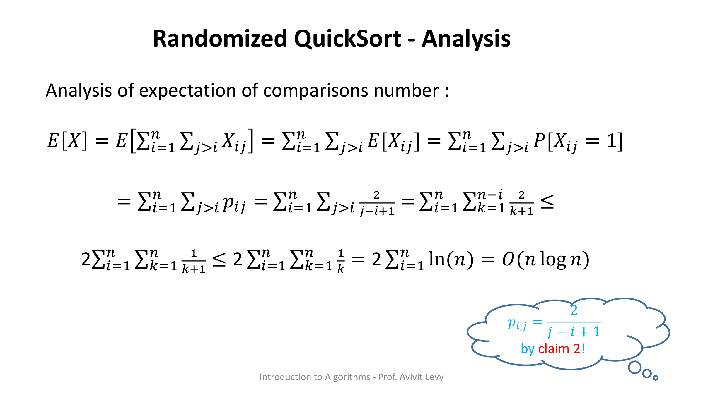
מקור: randomized-algorithms.pdf (עמ' 34–38)
8. העשרה — אלגוריתם Karger לחתך מינימלי
בעיית החתך המינימלי הגלובלי: בהינתן מולטי-גרף לא מכוון (גרף המתיר קשתות מקבילות), למצוא את מספר הקשתות הקטן ביותר שמחיקתו מפרקת את הגרף לשני רכיבים. אלגוריתם Karger פותר זאת בעזרת פעולה אחת: כיווץ קשת (edge contraction).
Karger's Contraction Algorithm:
Input: a connected multigraph G = (V, E).
Output: a cut of G.
while |V| > 2:
pick a uniformly random edge (u, v) ∈ E
contract (u, v): merge u and v into a single super-node,
keep parallel edges, delete self-loops
return the edges between the two remaining super-nodes
- כל עוד נותרו יותר משני קודקודים, בוחרים קשת אקראית אחידה ומכווצים אותה: שני קצותיה מתמזגים לקודקוד-על אחד.
- קשתות מקבילות נשמרות (זה מולטי-גרף), אבל לולאות עצמיות (קשת מקודקוד לעצמו) נמחקות.
- כשנשארים שני קודקודי-על, הקשתות שביניהם מגדירות חתך — וזו התשובה שהאלגוריתם מחזיר.
הגברת הסתברות ההצלחה בחזרות
זוהי הטכניקה המרכזית לאלגוריתמי Monte Carlo, ומופיעה גם ב-keyTopics של המודול: הגברת הסתברות. אם ריצה בודדת מצליחה בהסתברות p (קטנה), מריצים את האלגוריתם באופן בלתי-תלוי t פעמים ומחזירים את התוצאה הטובה ביותר. ההסתברות שכל ה-t הריצות נכשלות היא (1 − p)t, שמתכווץ אקספוננציאלית ל-0:
P[all t runs fail] ≤ (1 − p)^t ≤ e^{−p·t}
עבור Karger, לקיחת t = Θ(n² log n) ריצות מעלה את הסתברות ההצלחה הכוללת קרוב ל-1 — במחיר זמן ריצה גדול יותר. זה בדיוק ההיגיון של Monte Carlo: מחליפים ודאות מיידית בזמן ריצה נוסף, עד שהסתברות השגיאה זניחה.
🎓 הרחבה — לא נדרש למבחן: על skip lists
skip list הוזכר אף הוא במיקוד המשימה אך אינו נלמד בקובץ שקפים זה. בקצרה: skip list הוא מבנה נתונים אקראי לרשימה ממוינת, שבו כל איבר "מקודם" למספר רמות לפי הטלת מטבע. הרמות העליונות מתפקדות כ"נתיבים מהירים" שמדלגים על איברים, וכך חיפוש/הכנסה/מחיקה רצים בתוחלת זמן O(log n) — אלטרנטיבה אקראית ופשוטה לעצי חיפוש מאוזנים. זהו נושא להעשרה בלבד ואינו חלק מחומר האשכול.
מקור: העשרה מעבר לשקפים (Karger min-cut / probability amplification / skip list — לא מופיעים בקובץ ההרצאה)
תרגיל בית 12
להלן תעתיק מילה במילה של דף התרגיל. קובץ hw-12-2023.pdf הוא דף השאלות (הוא מסתיים ב"בהצלחה!"), ובנוסף קיים פתרון רשמי של הקורס בקובץ sol-hw-12-2023.pdf — הוא מובא במלואו (סריקות מקוריות + תעתיק נאמן) בתוך "הצג פתרון" שבהמשך. לאחר הפתרון הרשמי מופיע גם הסבר מודרך שלנו, כתוספת בלבד.
⬇️ הורדת דף התרגיל (hw-12-2023.pdf) ⬇️ הורדת הפתרון הרשמי (sol-hw-12-2023.pdf)
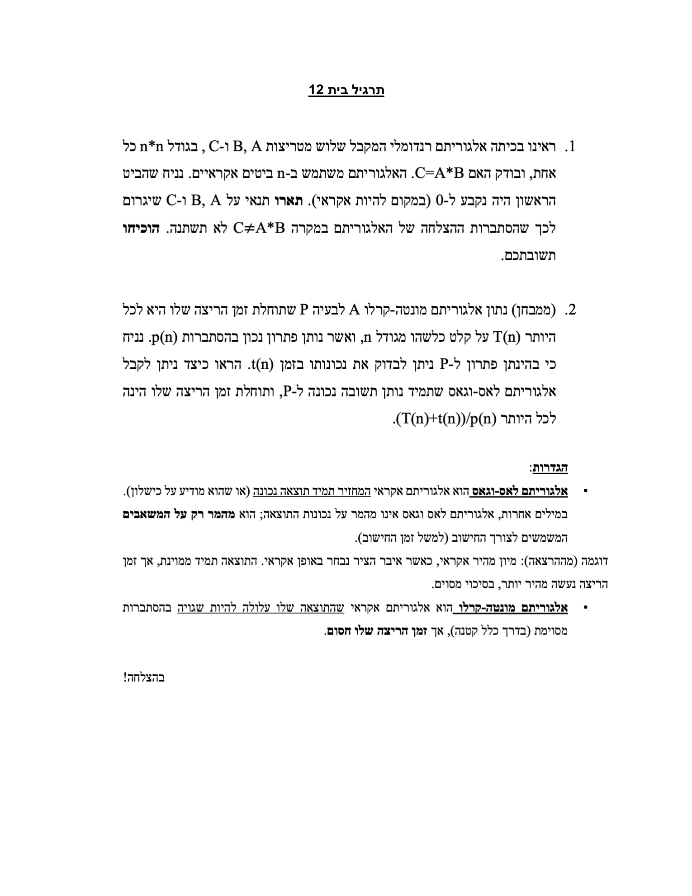
שאלה 1
ראינו בכיתה אלגוריתם רנדומלי המקבל שלוש מטריצות A, B ו-C, בגודל n*n כל אחת, ובודק האם C=A*B. האלגוריתם משתמש ב-n ביטים אקראיים. נניח שהביט הראשון היה נקבע ל-0 (במקום להיות אקראי). תארו תנאי על A, B ו-C שיגרום לכך שהסתברות ההצלחה של האלגוריתם במקרה C≠A*B לא תשתנה. הוכיחו תשובתכם.
שאלה 2 (ממבחן)
נתון אלגוריתם מונטה-קרלו A לבעיה P שתוחלת זמן הריצה שלו היא לכל היותר T(n) על קלט כלשהו מגודל n, ואשר נותן פתרון נכון בהסתברות p(n). נניח כי בהינתן פתרון ל-P ניתן לבדוק את נכונותו בזמן t(n). הראו כיצד ניתן לקבל אלגוריתם לאס-וגאס שתמיד נותן תשובה נכונה ל-P, ותוחלת זמן הריצה שלו הינה לכל היותר (T(n)+t(n))/p(n).
הגדרות (מילה במילה מדף התרגיל):
אלגוריתם לאס-וגאס הוא אלגוריתם אקראי המחזיר תמיד תוצאה נכונה (או שהוא מודיע על כישלון). במילים אחרות, אלגוריתם לאס וגאס אינו מהמר על נכונות התוצאה; הוא מהמר רק על המשאבים המשמשים לצורך החישוב (למשל זמן החישוב).
דוגמה (מההרצאה): מיון מהיר אקראי, כאשר איבר הציר נבחר באופן אקראי. התוצאה תמיד ממוינת, אך זמן הריצה נעשה מהיר יותר, בסיכוי מסוים.
אלגוריתם מונטה-קרלו הוא אלגוריתם אקראי שהתוצאה שלו עלולה להיות שגויה בהסתברות מסוימת (בדרך כלל קטנה), אך זמן הריצה שלו חסום.
בהצלחה!
הפתרון הרשמי של הקורס
להלן הפתרון הרשמי כפי שנכתב, בסריקות המקוריות (עם כל הסימונים והנוסחאות), ולצדן תעתיק נאמן.
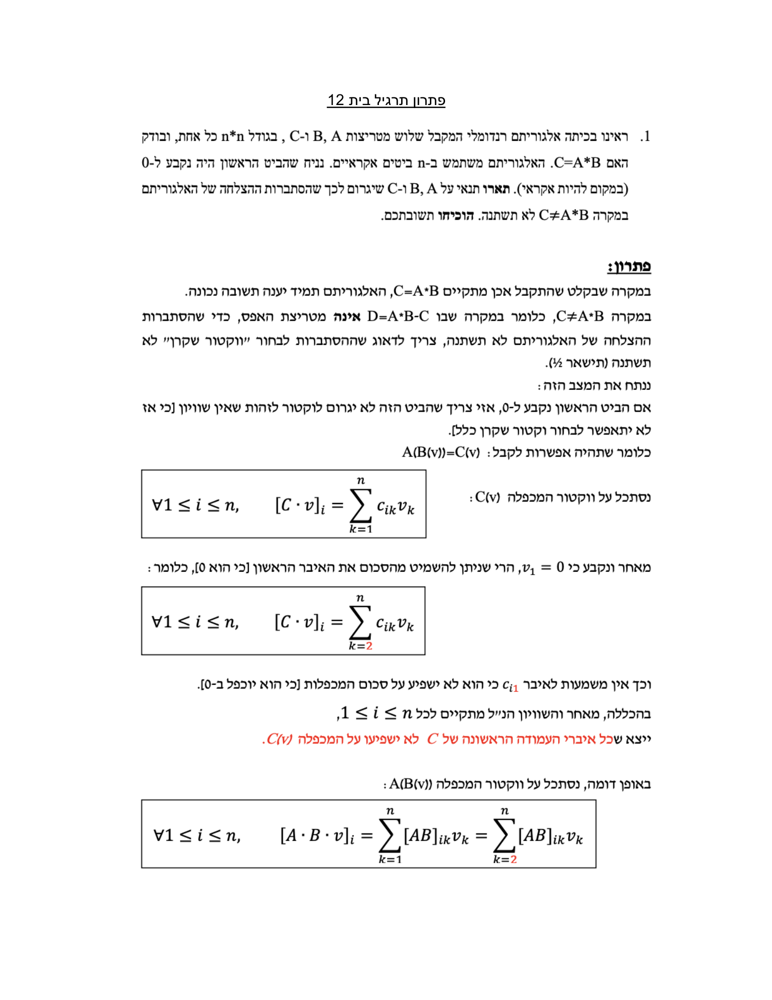
שאלה 1 — פתרון רשמי:
במקרה שבו אכן מתקיים C = A*B, האלגוריתם תמיד יענה תשובה נכונה. במקרה C ≠ A*B, כלומר במקרה שבו D = A*B − C אינה מטריצת האפס, כדי שהסתברות ההצלחה של האלגוריתם לא תשתנה, צריך לדאוג שההסתברות לבחור "וקטור שקרן" לא תשתנה (תישאר ½).
ננתח את המצב הזה: אם הביט הראשון נקבע ל-0, אזי צריך שהביט הזה לא יגרום לוקטור לזהות שאין שוויון [כי אז לא יתאפשר לבחור וקטור שקרן כלל]. כלומר שתהיה אפשרות לקבל A(B(v)) = C(v).
נסתכל על וקטור המכפלה C(v):
∀1 ≤ i ≤ n, [C · v]i = Σk=1n cik vk
מאחר ונקבע כי v1 = 0, הרי שניתן להשמיט מהסכום את האיבר הראשון [כי הוא 0], כלומר:
∀1 ≤ i ≤ n, [C · v]i = Σk=2n cik vk
וכך אין משמעות לאיבר ci1 כי הוא לא ישפיע על סכום המכפלות [כי הוא יוכפל ב-0]. בהכללה, מאחר והשוויון הנ"ל מתקיים לכל 1 ≤ i ≤ n, ייצא שכל איברי העמודה הראשונה של C לא ישפיעו על המכפלה C(v).
באופן דומה, נסתכל על וקטור המכפלה A(B(v)):
∀1 ≤ i ≤ n, [A · B · v]i = Σk=1n [AB]ik vk = Σk=2n [AB]ik vk
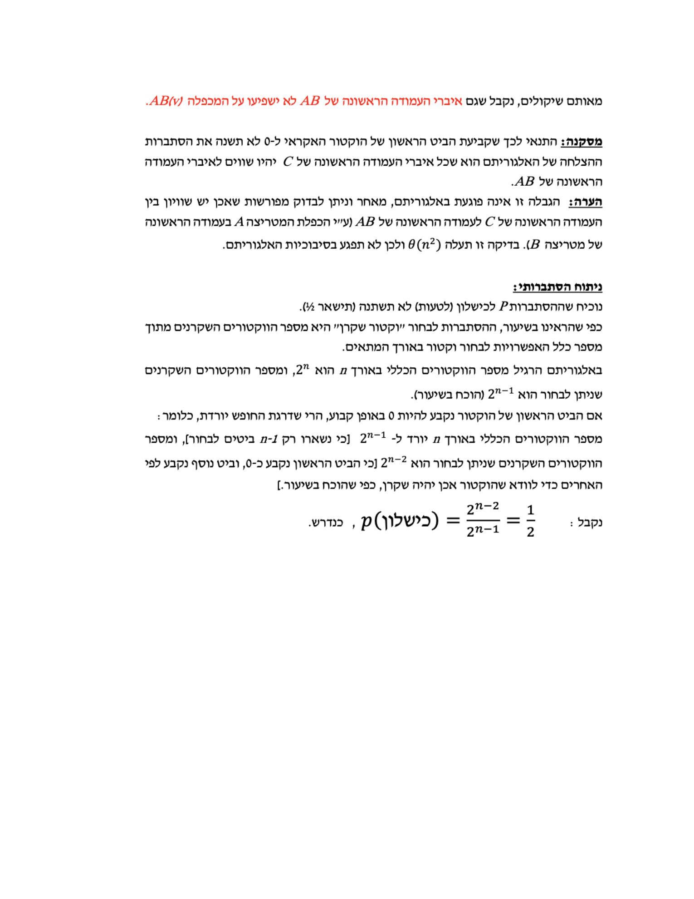
מאותם שיקולים, נקבל שגם איברי העמודה הראשונה של AB לא ישפיעו על המכפלה AB(v).
מסקנה: התנאי לכך שקביעת הביט הראשון של הוקטור האקראי ל-0 לא תשנה את הסתברות ההצלחה של האלגוריתם הוא שכל איברי העמודה הראשונה של C יהיו שווים לאיברי העמודה הראשונה של AB.
הערה: הגבלה זו אינה פוגעת באלגוריתם, מאחר וניתן לבדוק מפורשות שאכן יש שוויון בין העמודה הראשונה של C לעמודה הראשונה של AB (ע"י הכפלת המטריצה A בעמודה הראשונה של מטריצה B). בדיקה זו עולה θ(n2) ולכן לא תפגע בסיבוכיות האלגוריתם.
ניתוח הסתברותי:
נוכיח שההסתברות P לכישלון (לטעות) לא תשתנה (תישאר ½). כפי שהראינו בשיעור, ההסתברות לבחור "וקטור שקרן" היא מספר הוקטורים השקרנים מתוך מספר כלל האפשרויות לבחור וקטור באורך המתאים.
באלגוריתם הרגיל מספר הוקטורים הכללי באורך n הוא 2n, ומספר הוקטורים השקרנים שניתן לבחור הוא 2n−1 (הוכח בשיעור).
אם הביט הראשון של הוקטור נקבע להיות 0 באופן קבוע, הרי שדרגת החופש יורדת, כלומר: מספר הוקטורים הכללי באורך n יורד ל-2n−1 [כי נשארו רק n−1 ביטים לבחור], ומספר הוקטורים השקרנים שניתן לבחור הוא 2n−2 [כי הביט הראשון נקבע כ-0, וביט נוסף נקבע לפי האחרים כדי לוודא שהוקטור אכן יהיה שקרן, כפי שהוכח בשיעור].
נקבל:
P(כישלון) = 2n−2 / 2n−1 = ½ כנדרש.
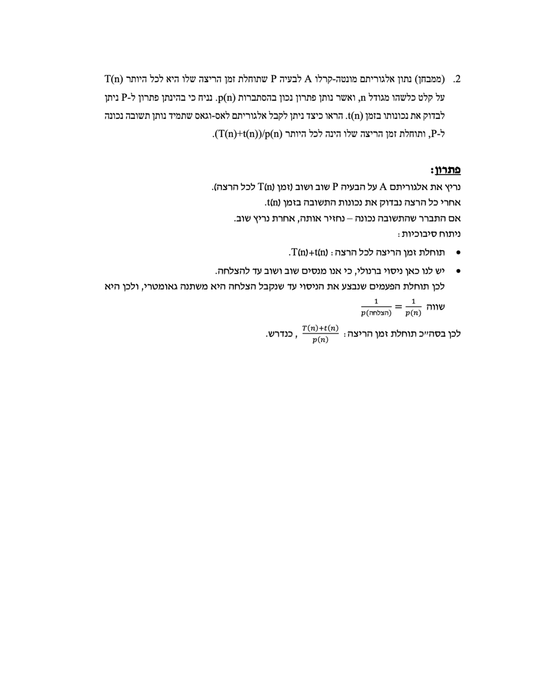
שאלה 2 — פתרון רשמי:
נריץ את אלגוריתם A על הבעיה P שוב ושוב (זמן T(n) לכל הרצה). אחרי כל הרצה נבדוק את נכונות התשובה בזמן t(n). אם התברר שהתשובה נכונה — נחזיר אותה, אחרת נריץ שוב.
ניתוח סיבוכיות:
- תוחלת זמן הריצה לכל הרצה: T(n) + t(n).
- יש לנו כאן ניסוי ברנולי, כי אנו מנסים שוב ושוב עד להצלחה. לכן תוחלת הפעמים שנבצע את הניסוי עד שנקבל הצלחה היא משתנה גאומטרי, ולכן היא שווה 1/P(הצלחה) = 1/p(n).
לכן בסה"כ תוחלת זמן הריצה: (T(n) + t(n)) / p(n), כנדרש.
הסבר מודרך שלנו
שאלה 1 (רעיון מנחה — Freivalds):
האלגוריתם המדובר הוא אלגוריתם Freivalds: מגרילים וקטור אקראי r ∈ {0,1}n (n ביטים אקראיים) ובודקים אם A·(B·r) = C·r. אם C = A·B — השוויון תמיד מתקיים (הסתברות שגיאה 0). אם C ≠ A·B — האלגוריתם טועה (מחזיר "שווה") רק אם (A·B − C)·r = 0, מה שקורה לכל היותר בהסתברות 1/2 על פני בחירת r.
כשקובעים את הביט הראשון של r ל-0 (במקום אקראי), אנו למעשה מאלצים r1 = 0. הכיוון של הפתרון: יש לתאר תנאי על D = A·B − C (מטריצת ההפרש) שבו איבוד האקראיות בקואורדינטה הראשונה אינו משנה את הסתברות התפיסה — למשל שהעמודה הראשונה של D היא אפס, כך שהערך של r1 ממילא לא משפיע על D·r. אז ההסתברות לתפוס C ≠ A·B נשארת כשהיתה (נקבעת ע"י שאר הקואורדינטות האקראיות). ההוכחה: מראים ש-D·r אינו תלוי ב-r1 תחת התנאי הזה.
שאלה 2 (רדוקציה Monte Carlo → Las Vegas):
הרעיון: הופכים אלגוריתם שעלול לטעות לאלגוריתם שתמיד צודק, על-ידי חזרה עד הצלחה מאומתת (בדיוק כמו הגברת הסתברות):
Las-Vegas from Monte-Carlo (A, verifier):
repeat:
run A on the input # expected time ≤ T(n)
verify the returned answer # time t(n)
until the verifier accepts
return the verified answer
כל "ניסיון" עולה בתוחלת T(n) + t(n) (הרצה + בדיקה) ומצליח (מחזיר תשובה נכונה שהבודק מקבל) בהסתברות p(n). מספר הניסיונות עד ההצלחה הראשונה הוא משתנה מקרי גאומטרי עם תוחלת 1/p(n). לפי לינאריות (ומשפט Wald), תוחלת הזמן הכוללת היא לכל היותר (T(n) + t(n)) / p(n) — בדיוק החסם המבוקש. התוצאה תמיד נכונה כי מחזירים רק תשובה שעברה אימות, ולכן זהו אלגוריתם Las Vegas.
מקור: hw-12-2023.pdf (עמ' 1)
בדיקה עצמית
אלגוריתם אקראי מחזיר תמיד את התשובה הנכונה, אך זמן הריצה שלו משתנה מהרצה להרצה ותוחלתו חסומה. לאיזה סוג הוא שייך?
בדוגמה S={7,5,2,8,9,1,4,6}, האיבר S⁸=9 נבחר כ-pivot הראשון בכל הריצה. כמה מהמשתנים Xk,8 (עבור k=1..7) שווים 1?
לפי Claim 2, מהי ההסתברות pi,j ש-Si ו-Sj מושווים במהלך הריצה?
מהי תוחלת מספר ההשוואות של Randomized QuickSort, E[X], עבור קלט כלשהו בגודל n?
לפי Claim 1, שני האיברים Si ו-Sj מושווים אם ורק אם ה-pivot הראשון שנבחר מהטווח [Si..Sj] הוא —